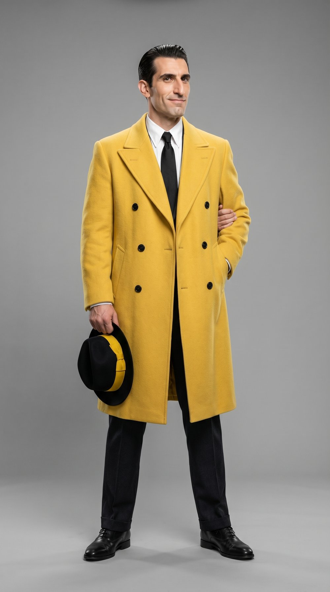
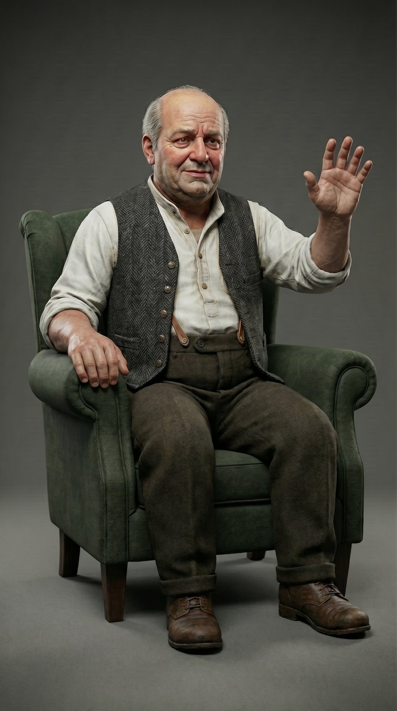

How LarryDoJo built a character-consistent AI video sequence from a public-domain source. Forty seconds of finished video, four hero frames, one Character Pack, zero IP exposure.
Four starting frames, chained into 40 seconds of finished video. Same Character Pack across every cut. Same room across every domestic frame. The full pipeline that produced this is documented in the PDF below.
Generative AI can produce a single beautiful image. The harder problem is producing a hundred of them that share the same face, the same coat, the same room, and the same light. That problem is what this proof of concept set out to solve.
Every frame an AI model produces is, by default, a fresh draw. A character’s nose shifts. A coat changes shade. A room rearranges itself. For a single hero image, this does not matter. For a story, it matters completely.
We chose the opening of the 1931 Dick Tracy strip as the test case. The earliest strips lapsed into the public domain decades ago after a failed renewal, giving us a rich, period-correct source to adapt without paying licensing fees or risking takedowns.
The brief had three constraints: use only public-domain source material, produce a recognizable period-correct opening, and document every step so a second team could repeat the work without supervision.
The result is a repeatable production method. Anyone with the framework, the source, and a Gemini 3 Pro account can reproduce a comparable sequence in a single working day, at $0.54 per finished second.
Copyright on the 1931 strips lapsed in the late 1950s when the Chicago Tribune failed to renew. The 1931 imagery is free to use. The trademark on the name "Dick Tracy" is not. We solved this with a one-line decision: rename the character, keep the look.
The new name is descriptive, nods to creator Chester Gould’s original silhouette, and carries no enforceable mark. Every visual element of the character (the coat, the hat, the jaw, the slicked hair) comes directly from the 1931 strips and is therefore in the clear.
The Nano Banana Professional Framework breaks production into five stages. Each one produces a defined output. No stage begins until the previous one validates. The pipeline is explicit on purpose: it removes guesswork and makes the work auditable.
Independent research measured a consistency score drop from 7.99 to 0.55 when characters are generated from a text prompt alongside their environment. We always generate the character anchor first, in isolation, then composite into the environment plate. Every stage of the framework is built around protecting this rule.
Write the Character Bible (anatomy, materials, fixed identifiers) and generate a 3-view Character Pack as 3D figurine references. Validate with the Exploded View test before proceeding.
Build modular environment plates as reusable kits, never as finished scenes. Lock material continuity (wallpaper, floor, doorframes) across plates that share a location.
Generate each character independently in a neutral studio. Validate against the Pack. Composite into the plate using multi-image fusion with IP-Adapter scale tuned between 0.4 and 0.6.
The last frame of any sequence becomes the reference for the next. This preserves dust, light, prop positions, and dynamic environmental details across cuts.
Edit, never re-roll. If a frame is 80% correct, a natural-language edit fixes the rest without losing what already works. Faces stay protected; we edit lighting and pose only.
The Character Bible called it "canary-yellow wool overcoat, double-breasted with six black buttons." That phrase, kept verbatim in every prompt, became the fixed identifier the model could not lose. Generic descriptions drifted. Specifics held.


Frame 1 (below) and Frame 3 share the same plate, the same lighting, and the same characters in different states. The continuity holds because it was built to. Every element is anchored upstream in the framework.
A real production stack costs real money. The honest cost of this POC is not "API tokens." It is one day of three professional subscriptions: the reasoning layer, the image and video layer, and the editing layer. Together they produced 40 seconds of finished, character-consistent video.
A traditional animation house quotes 60 seconds of character animation at $5,000 to $25,000. The math problem the framework solves is not "how do we make AI cheaper than humans." It is "how do we make AI consistent enough to be worth using at all." Once that's solved, the price drops out of the equation.
Generating a character inside a scene from a text prompt collapses consistency in one step. Stage III exists for a reason.
"Six black buttons" held. "Yellow coat" drifted. Specifics survive into the output. Generics evaporate.
Treating environments as recombinable elements lets the same room hold three different frames without breaking.
Re-rolling at 80% costs you the small wins. Stage V exists to preserve them. Trust the anchor.
Renaming the protagonist took an afternoon. The legal certainty it bought outweighed every other safeguard.
The frames are pretty. The framework is what makes them repeatable. That is what scales.
The full PDF runs 19 pages and covers every stage, every gate, every blueprint. Sample bibles, validation checklists, the full IP timeline, and the complete cost breakdown.
If it didn't kick off automatically, click here to grab the PDF.
LarryDoJo runs the same pipeline for client work. AI content, rapid websites, custom apps. Built fast, governed tightly, shipped weekly.
Start a Project →